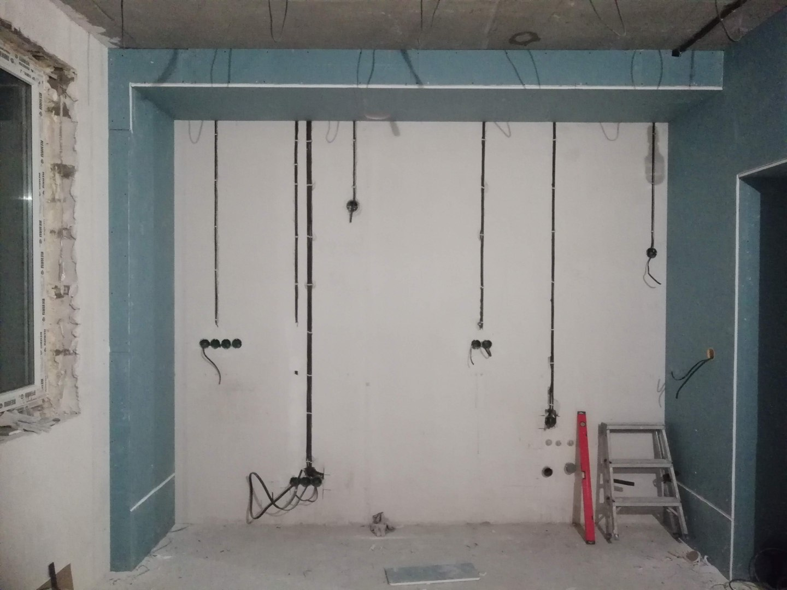
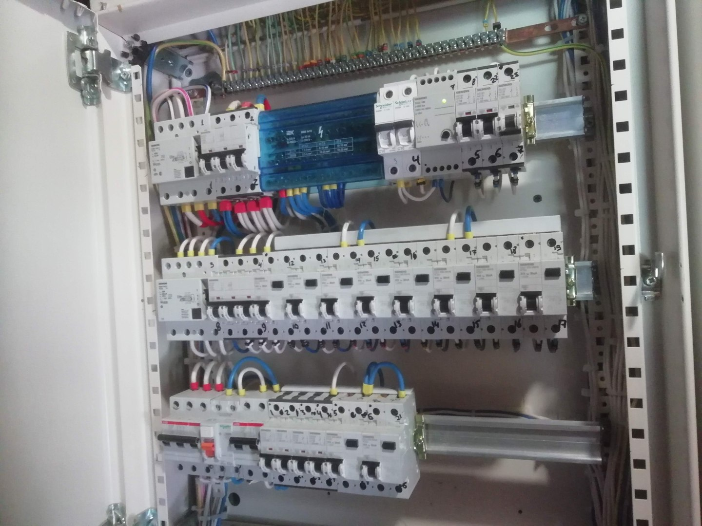
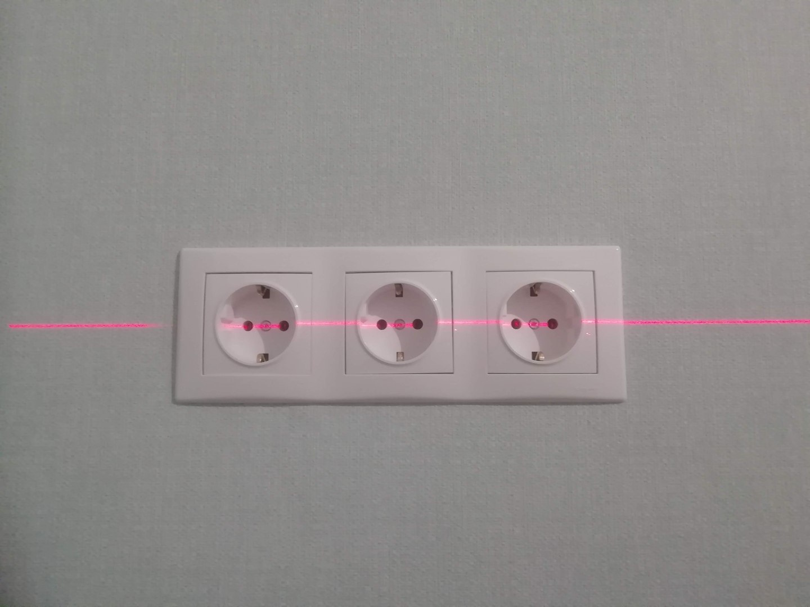

Эконом
Базовая надёжная электрика без лишнего.
Обсуждаем необходимые точки, группы и состав щита.
Выбрать в калькуляторе ↗Главная / Электромонтаж
Электромонтаж
От точек и групп до щита и проверки подключений. Для квартиры или дома — с согласованным составом работ.
01 / Проектирование
Согласуем расположение оборудования и органов управления, группы нагрузок и подготовку для будущей автоматизации.
02 / Монтаж

Прокладываем трассы, подготавливаем подрозетники и питание оборудования. Объём скрытых работ и порядок фиксации согласуем заранее.
На фото — вертикальные кабельные трассы и места установки розеток и выключателей до отделки.
03 / Сборка щитов
Подбираем защиту, компоновку и маркировку под согласованные нагрузки и функции. Резерв для расширения обсуждаем отдельно.
После монтажа проверяем подключения в рамках согласованной программы приёмки.

04 / Чистовой этап

Расположение и состав устройств согласуем с отделкой. На фото — контроль установки розеточного блока.
Уровни электрики
Уровень — вход в обсуждение состава. Точную спецификацию согласуем по Вашему объекту.
Базовая надёжная электрика без лишнего.
Обсуждаем необходимые точки, группы и состав щита.
Выбрать в калькуляторе ↗Оптимальный уровень для большинства объектов.
Уточняем удобство управления и подготовку инфраструктуры.
Выбрать в калькуляторе ↗Больше инженерных возможностей и подготовка под сложные сценарии.
Разбираем расширенный состав, связи и резерв для развития.
Выбрать в калькуляторе ↗Это логика выбора, а не три фиксированных комплекта. Актуальные суммы «от» формирует один калькулятор стартового этапа. Точная смета появляется после получения исходных данных и проверки проекта.
Направления развития
Согласование света, розеток, щита и подготовки для автоматизации с учётом стадии ремонта.
Распределение по помещениям и инженерному оборудованию, резерв и связи между системами.
Состав сетей и места оборудования согласуются по отдельной задаче вместе с электрикой.
Согласуем схемы, маркировку, перечни и инструкции по выбранному объёму работ.
Обсудить объект
Квартира или частный дом, стадия ремонта и нужные функции — начнём с этих данных.
В VK и MAX вставьте подготовленный текст вручную.
Если удобнее позвонить: +7 (910) 007-17-27